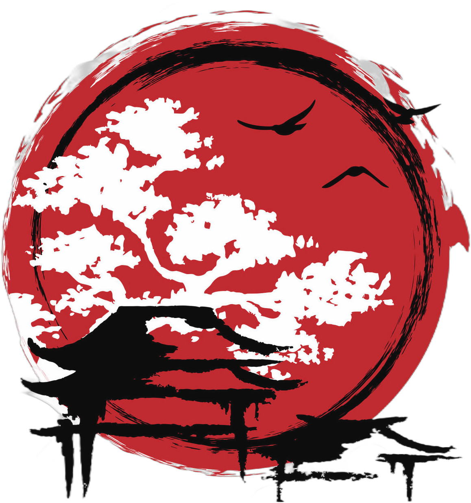

Un jeu de rôle hopepunk dans un univers de fantasy inspiré du japon médiéval, où les joueurs incarnent des komusō, ayant fait vœu d’aider la population, et où des créatures nommées mushis ont donné naissance à la magie.
Inspirations: Mushishi, Le château dans le ciel, Shadow of the Colossus, Avatar le maître de l’air, Naruto, Princesse Mononoké, Le Voyage de Chihiro, Zelda…
Retrouvez les articles de mon blog à propos du développement du jeu :
tag #ori-mushi @ chezsoi.org
Suivez dans l’ordre ces étapes, qui sont décrites plus loin :
Au début de votre première partie, vous commencerez par établir des liens entre votre personnage et deux autres komusō.
[En cours de rédaction] Description des principales Voies pouvant être choisies.
Je connais et raconte les plus incroyables histoires, et sais captiver un public avec jonglage, tours de passe-passe, ombres chinoises, spectacles, etc. Je sais aussi apaiser des créatures ou des situations.
Progression du personnage : via des représentations de spectacles réussies, et le perfectionnement de mes technique de pacification
Cette Voie peut amener un komusō à devenir artistes-sage, un daïmio.
Je veux maîtriser toutes les formats d’artisanat, pour construire les objets les plus beaux et utiles, et leur insuffler un peu d’âme.
Précisions sur la feuille de Voie :
J’étudie et m’efforce d’apaiser mushis et Colosses.
Précisions sur la feuille de Voie :
Les mushis étant invisibles, chaque Mushishi a sa propre manière de les détecter : grâce à des lunettes spéciales, en fermant les yeux et en se basant sur son odorat, ou bien en les caressant délicatement, etc. Au joueur de déterminer comment son komusō perçoit les mushis, et de l’indiquer sur sa feuille de Voie.
Un Mushishi peut employer sa compétence Connaissance des mushis pour détecter leur présence dans un lieu. Il effectue alors un jet de dé, et selon le résultat le MJ lui indique s’il perçoit ou non des mushis à proximité. Un résultat « mais » peut signifier que le Mushishi perçoit autre chose, qu’il pense détecter un mushi mais qu’il se trompe, etc.
Un Mushishi peut également employer sa compétence Connaissance des mushis pour tenter d’identifier un mushi, lorsqu’il a détecté la présence de l’un d’eux. Il effectue alors un jet de dé, et le meilleur dé obtenu indique le nombre de caractéristiques que le MJ lui indique concernant ce mushi. Il est possible de retenter un jet d’identification à partir d’un nouvel échantillon / dans des nouvelles circonstances.
Soigner permet à un Mushishi de stabiliser une blessure
Je maîtrise l’art du Verbe, et les Vocables magiques.
Précisions sur la feuille de Voie :
Pourquoi es-tu devenu komusō ?
Coche l’une des options proposées sur ta feuille de personnage, puis détaille ton histoire en quelques phrases au dos.
| 🎲 | Motivation | Vœu personnel | Gain d’Ori |
|---|---|---|---|
| ⚀ | Aider mon prochain | Vœu d’assistance | Lorsque vous sauvez ou changez positivement & significativement la vie de quelqu’un |
| ⚁ | Devenir daïmio | Vœu d’impartialité | Lorsque vous contribuez significativement à ce que justice soit faite |
| ⚂ | Devenir un maître | Vœu d’excellence | Lorsque vous surpassez un maître ou remportez une compétition |
| ⚃ | Expier mes erreurs | Vœu de réparation | Lorsque vous résolvez un conflit / réparez un dysfonctionnement majeur |
| ⚄ | Humilité | Vœu de discrétion | Lorsque résolvez une situation sans attendre de reconnaissance et sans qu’aucun PNJ n’ait connaissance de vos actions |
| ⚅ | Voyager | Vœu d’exploration | À chaque découverte d’un lieu oublié ou secret |
À chaque motivation est associé un vœu personnel suggéré : vous êtes libre d’en choisir un autre. Le vœu personnel est l’un des 5 vœux des komusō, ou un 6e vœu qui lui est propre, qui guide votre personnage dans sa vie.
Il s’agit d’un comportement de votre personnage qui lui cause régulièrement des problèmes. Il peut s’agir d’un savoir-être qui vous manque
Essayer de choisir une mauvaise habitude que vous pourrez exploiter durant la partie pour créer des scènes de roleplay intéressantes, ou mettre volontairement votre personnage en difficulté lors de scènes.
Les komusō transportent avec eux tout le nécessaire pour voyager : de quoi camper, cuisiner, un peu de nourriture, etc. Ce matériel de voyage est réparti dans les sacs des membres du groupe.
L’inventaire de départ des personnages est complètement libre : il s’agit de tous les objets qu’ils souhaiteraient transporter sur eux. Ces objets n’étant pas spéciaux, ils n’octroient pas de dé supplémentaires lors des jets.
Les artefacts sont des objets spéciaux uniques, magiques ou d’excellente facture, et leur possesseur les manipule avec virtuosité. Deux PJs ne peuvent pas avoir le même.
| Bâton télescopique : peut être employé tout autant comme une arme, que comme un moyen de prendre de la hauteur | Grappin télescopique : comme dans Zelda ou Batman | Arc à flèches soniques : propulse des flèches éthérées, illimitées et aux multiples propriétés : elles peuvent sonner l’alarme, assourdir, trancher en deux de petits objets, etc. |
|---|---|---|
| Amulette de feu : produit d’intenses flammes | Gant de bourrasque : projette de l’air | Cape d’invisibilité : permet de camoufler une seule personne, ne supprime pas le son |
| Instrument de musique : dont la sonorité apaise toute créature | Grande plume volante | Masque permettant de changer de visage |
| Guide d’identification de mushis | Lunettes à mushis | Katana tranche-tout |